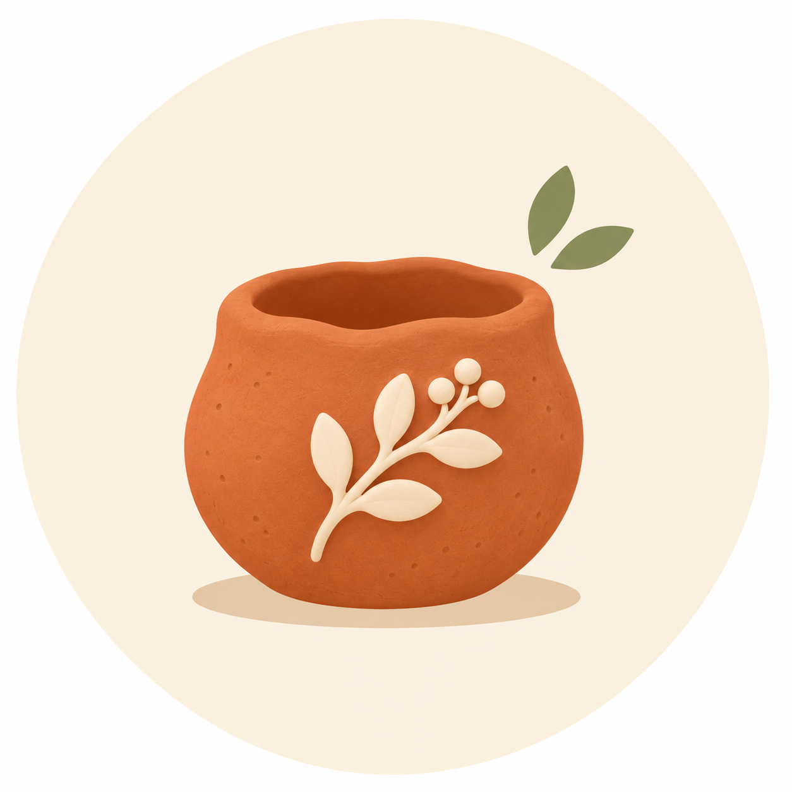

Skip to content
A little less scrolling. A little more making.

clay
&
cozy
AIR DRY CLAY CRAFTS
Home
The projects
Our story
New to clay? Start here
↗
Enable JavaScript to explore the project journal and tutorials.